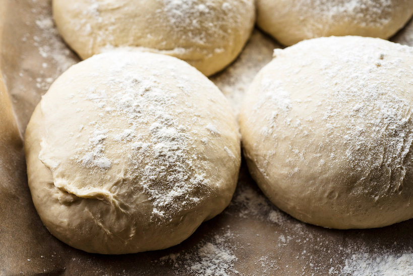

Homemade Pizza Dough

Description
A simple and versatile Italian-style pizza dough that can be chilled or frozen, then shaped and cooked by oven or barbecue
Steps
Ingredients
- 500g 00 flour
- 1tsp salt
- 1/2 tsp dried yeast
- 400ml warm water
- oil, for greasing
Method
- Sieve the flour/s and salt on to a clean work surface and make a well in the middle.
- In a jug, mix the yeast, sugar and oil into 650ml of lukewarm water and leave for a few minutes, then pour into the well.
- Using a fork, bring the flour in gradually from the sides and swirl it into the liquid. Keep mixing, drawing larger amounts of flour in, and when it all starts to come together, work the rest of the flour in with your clean, flour-dusted hands. Knead until you have a smooth, springy dough.
- Place the ball of dough in a large flour-dusted bowl and flour the top of it. Cover the bowl with a damp cloth and place in a warm room for about an hour until the dough has doubled in size.
- Now remove the dough to a flour-dusted surface and knead it around a bit to push the air out with your hands – this is called knocking back the dough. You can either use it immediately, or keep it, wrapped in clingfilm, in the fridge (or freezer) until required.
- If using straight away, divide the dough up into as many little balls as you want to make pizzas – this amount of dough is enough to make about six to eight medium pizzas.
- Timing-wise, it is a good idea to roll the pizzas out about 15 to 20 minutes before you want to cook them. Don’t roll them out and leave them hanging around for a few hours, though – if you are working in advance like this it’s better to leave your dough, covered with clingfilm, in the fridge. However, if you want to get them rolled out so there’s one less thing to do when your guests are round, simply roll the dough out into rough circles, about 0.5cm thick, and place them on slightly larger pieces of olive-oil-rubbed and flour-dusted tin foil. You can then stack the pizzas, cover them with clingfilm, and pop them into the fridge.
Tips
This dough is best made with Italian Tipo ‘00’ flour, which is finer ground than normal flour, and it will give your dough an incredible super-smooth texture. Look for it in Italian delis and good supermarkets. If using white bread flour instead, make sure it’s a strong one that’s high in gluten, as this will transform into a lovely, elastic dough, which is what you want. Mix in some semolina flour for a bit of colour and flavour, if you like.